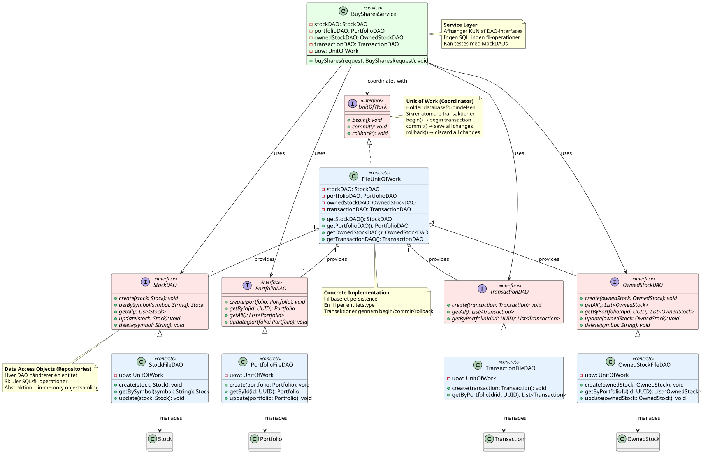

Software Design og Test

DAO Interfaces: src/persistence/interfaces/
DAO Implementation: src/persistence/fileImplementation/
Unit of Work: src/persistence/interfaces/UnitOfWork.java
Unit Test: test/unit/business/services/trading/BuySharesServiceTest.java
Integration Test: test/integration/business/services/trading/BuySharesServiceIntTest.java
Lazy Loading og N+1 Queries